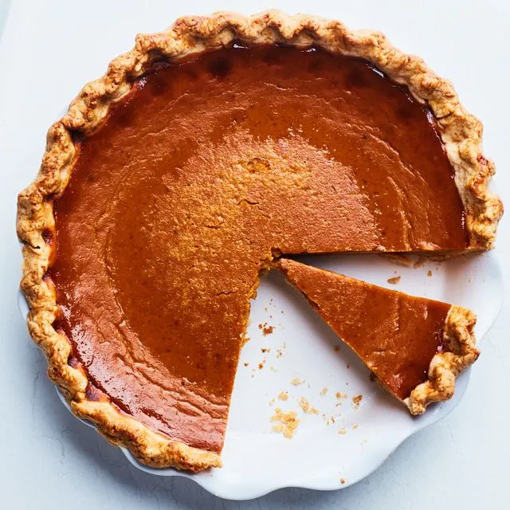

Pie

A pie is a baked dish consisting of a pastry dough casing that contains a filling of various sweet or savory
ingredients. Typically made from a mixture of flour, fat (such as butter, lard, or oil), and liquid, the pastry
can be structured as a single-crust (base only), top-crust (lid only, often called a cobbler if non-pastry), or
two-crust (base and top).
Ingredients
- flour
- butter
- salt
- sugar
- vinegar
- cinnamon
Steps
-
Roll out the chilled dough and line a pie pan with the bottom crust, trimming the excess.
-
Prepare your filling (e.g., fruit mixed with sugar, thickener, and spices) and pour it into the crust.
-
Add a top crust or crumb topping, trim edges, and crimp or seal the dough.
-
Cut steam vents in the top crust and brush with an egg wash for a golden finish.
-
Bake at 350°F-425°F (depending on the recipe) for 45-60 minutes until the crust is golden and the filling is
bubbling
Home